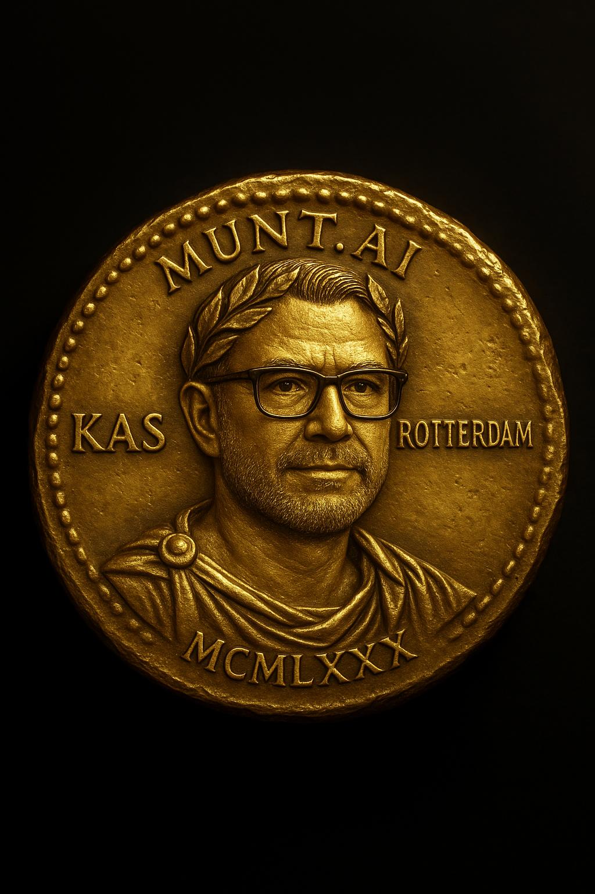

Upload je foto. Gebruik de prompt. Ontvang je eigen digitale aureus. Deel jouw keizerlijke legacy op LinkedIN!

🔥 Al 1.729 bezoekers gebruikten deze prompt!
Create a high-resolution digital image of a circular ancient Roman gold coin (aureus) with a historically authentic and weathered appearance. The coin should feature the embossed portrait of a modern person in realistic relief, modeled after the style of coins minted during the reign of Julius Caesar. The portrait should include:
- A laurel wreath (crown of leaves) on the head
- A Roman imperial robe (toga)
- Distinct facial features with modern eyeglasses
The engraved Latin-style inscriptions must be placed along the circular outer edge of the coin (not in horizontal alignment, but curved following the rim of the coin), just like authentic Roman coins.
The edge of the coin must include:
- At the top: "MUNT.AI"
- On the left: "[ROEPNAAM]"
- On the right: "[ROMEINSE STADNAAM]"
- At the bottom: "[GEBOORTEJAAR IN ROMEINSE CIJFERS]"
Design specifications:
- The gold should look rich, slightly aged, and glistening
- The relief should be deeply engraved and clearly visible
- The coin’s rim should have authentic Roman beading or edge pattern
- The background should be dark or neutral to highlight the golden shine
- The coin should look prestigious, powerful, and ancient